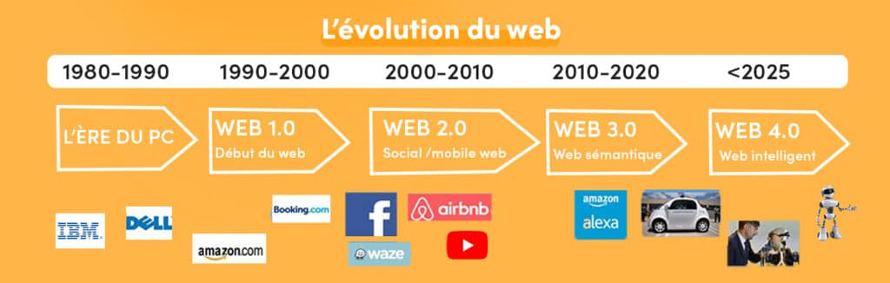

2.1 Historique de l'évolution du Web

- 1960s : Développement des concepts précurseurs du réseau ARPANET.
- 1989 : Invention du World Wide Web par Tim Berners-Lee au CERN.
- 1990 : Introduction du premier navigateur web, WorldWideWeb (plus tard renommé Nexus).
- 1993 : Mise en place des premiers sites web graphiques.
- 1995 : Émergence des premiers moteurs de recherche, dont Yahoo! et AltaVista.
- 1998 : Fondation du W3C pour standardiser les technologies web.
- 2000 : Essor des applications web avec la bulle Internet.
- 2004 : Lancement de Facebook, marquant l'ère des médias sociaux.
- 2007 : Introduction de l'iPhone et du terme "Web 2.0".
- 2010s : Croissance des services cloud, du web mobile et du web sémantique.
- 2019 : Déploiement de la 5G pour une connectivité plus rapide.
- 2020 : Renforcement de la cybersécurité et de la confidentialité en ligne.
- 2021 : Évolution des technologies web avec l'émergence de la Web3 et des NFT.